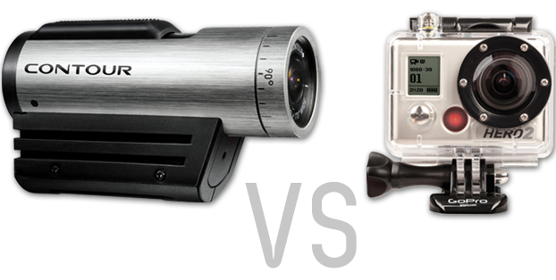

Product Review

Contour
Pros / Cons:
Pros- Simple to use
- 3 hour battery
- Ability to change the lens
- Sensor films good at night
- Sleek design that is ergonomic
- Not waterproof
- Mounts are not as friendly as GoPro
GoPro Hero
Pros / Cons:
Pros- Simple to use
- 3 hour battery
- Waterproof
- Has great mounts that fit on nearly everything
- Bulky
- Cannot change the lens
- Sensor films poorly at night
- Too many functions (digital camera, timed, multi-frame shots), Should be foucsed on video only
- Changing settings can be frustrating